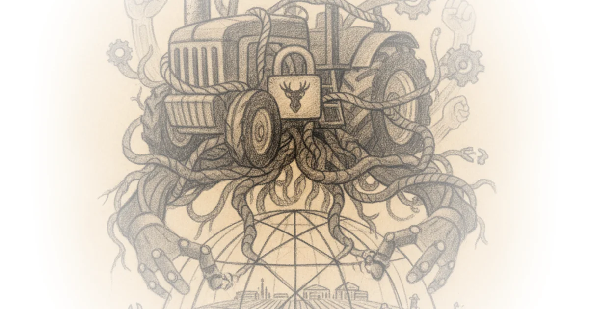

Matt Stoller delivers a piercing critique of how digital lock-ins have transformed American farming from an industry of ownership into one of enforced dependency. While headlines celebrate a recent settlement between the Federal Trade Commission and John Deere as a victory for farmers, Stoller argues that this deal is merely a cosmetic fix that leaves the monopolist's stranglehold on repair intact. For busy listeners tracking the erosion of property rights in the digital age, this piece exposes the mechanics of how "capital-light" corporate models exploit intellectual property laws to extract wealth from the very people who need their tools most.
The Digital Chokepoint
Stoller begins by dismantling the illusion that modern tractors are simply mechanical machines with computers added on. He explains that the core issue isn't just complexity, but intentional design: "In the case of John Deere combines and tractors, multiple functions are no longer purely mechanical, but run under the control of electronic control units (ECUs), which are embedded computers." This shift creates a artificial bottleneck where farmers cannot fix their own equipment without proprietary tools. The author notes that this is not an isolated incident in agriculture; it mirrors the "right to repair" battles fought over everything from smartphones to wheelchairs, yet the stakes here involve livelihoods worth millions of dollars.

The argument gains traction when Stoller connects these restrictions to a broader economic strategy. He writes, "A 'capital light' model of production, and an extractive monopolistic sales and repair strategy, are key parts of the Number Go Up rule, in which America prioritizes only economic activity that supports higher equity prices." This framing is crucial because it moves the conversation beyond consumer annoyance to a systemic failure of American industrial policy. By tightening intellectual property rules since the 1980s, the executive branch enabled companies to offshoring production while locking down domestic users. The result, as Stoller puts it, is that "Deere has been offshoring production, and exploiting its customers," turning a beloved American brand into an extractive monopoly.
Deere, rather than investing in better products and services, invested in making its products worse, harder to use, and more problematic to repair.
Critics might argue that manufacturers need strict control over software to ensure safety and prevent catastrophic mechanical failures. Stoller addresses this by noting the absurdity of such claims when applied broadly; he points out that Ford's CEO recently argued that allowing drivers to fix their own cars would lead to deaths, a paranoia that masks a desire for profit protection rather than public safety.
The Illusion of Victory
The piece takes a sharp turn as it analyzes the recent FTC settlement. While many advocates celebrated the deal, Stoller identifies fatal flaws in the agreement's language. He highlights that the settlement mandates Deere to provide repair resources on a "fair and reasonable" basis, but fails to define what those terms actually mean. This vagueness allows the company to continue charging exorbitant fees to independent shops while reserving the best tools for its own dealers.
Stoller cites a specific objection from farmer Jared Wilson, who noted that the settlement allows Deere to simply withhold future updates if they are not distributed to more than half of their own dealers first. "To avoid that, it could simply choose not to send those resources to more than half its own dealers," Stoller writes, illustrating how easily the company can game the system. The author also points out a glaring hardware gap: Deere still controls essential diagnostic kits like the USB-Link 3 Wireless Machine Interface Kit, which costs $1,100 and is frequently out of stock. This detail underscores that without mandatory interoperability for third-party software and tools, farmers remain trapped.
The commentary becomes particularly scathing regarding the leadership behind the settlement. Stoller describes FTC Chair Andrew Ferguson as a "weak person" who lacks rigor and views policy through a corporate Republican lens rather than one focused on ordinary Americans. He argues that Ferguson's refusal to go to trial was a missed opportunity to establish a public record of wrongdoing, stating, "Getting a finding of liability, and laying out a record for the public in court, really does matter in terms of understanding what is going on." Instead, the settlement acts as a "blanket pardon," allowing Deere to continue its practices without admitting fault.
The Global Context
Beyond domestic politics, Stoller weaves in a broader geopolitical warning. He suggests that this extractive model is unsustainable because it stifles innovation. As he observes, "companies like John Deere are increasingly investing not to improve their products, but to make them worse." This behavior stands in stark contrast to global competitors; Stoller notes that China has leaped ahead in critical sectors like batteries and electronics precisely because they are not bogged down by the same rigid intellectual property regimes that protect monopolists in the U.S. The implication is clear: the "capital-light" model works only as long as the U.S. remains on the technological frontier, a position it is rapidly losing.
The author draws a parallel to the broader digital landscape, referencing how Section 1201 of the Digital Millennium Copyright Act has imprisoned users in bad platforms. Just as the internet suffered from "enshittification," American agriculture is being hollowed out by a similar logic where ownership is an illusion. Stoller writes, "The phrase, 'You'll own nothing and be happy,' became an iconic way to understand the transformation of property rights." This quote serves as the piece's thematic anchor, reminding listeners that the struggle over tractor repair is actually a fight for the definition of property in the 21st century.
The fundamental problem with the proposed settlement is that Deere still maintains its monopoly power.
Bottom Line
Stoller's most compelling argument is that the recent FTC settlement is a strategic retreat rather than a breakthrough, leaving the structural monopoly intact through vague language and loopholes. While his critique of the administration's lack of rigor is sharp, it may understate the difficulty of dismantling entrenched intellectual property laws without a clear legislative mandate. Readers should watch whether state-level courts will reject these settlements in favor of stricter interoperability mandates, as that could be the only path to breaking the cycle of digital enclosure.